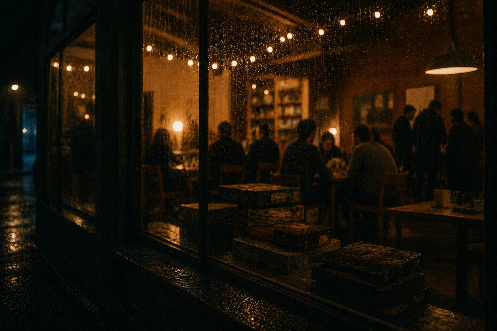
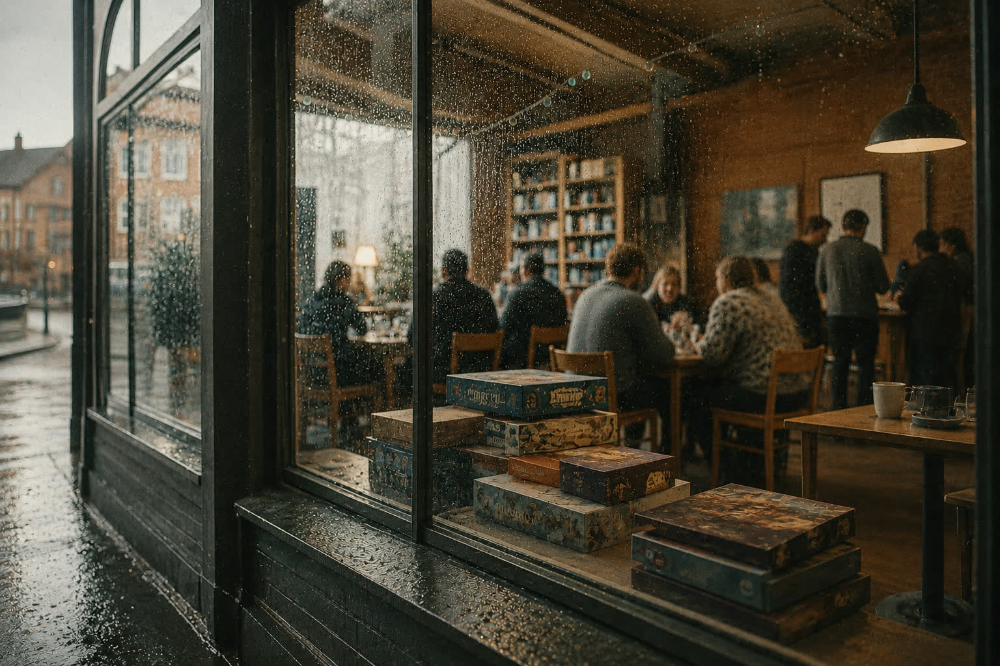

Forsamlingshuset · gatherings & community
Not what I made.
What we gather around.
Projects are one thing. What they're for is another: rooms with other people in them, and something good on the table.


Gatherings
monthlyGamestormers evenings gamestormers.dk
Once a month, a room in Aarhus fills with people who talk about games the way others talk about films or novels: endings, scenes, what a mechanic made them feel. Newcomers are looked after. The quiet ones are welcome to stay quiet.
Tabletop & roleplaying
Dice, character sheets, too much coffee. Strangers sit down; an hour later they're a party. Some of the worlds in the back room were first said out loud at these tables.
Folk dancing
You take whoever's hand is offered and follow the figure until your feet know it. The music is live and the floor is full; nobody came to watch. I keep going back for the laughter, and for the way a hall of strangers briefly moves on one pulse.
Folk festival folk.gamestormers.dk
At a volunteer-run folk festival, someone's grandmother and someone's teenager end up on the same dance floor. That doesn't happen by itself. I help where help is needed.
Venues & volunteers turkis.gamestormers.dk
Cultural spaces run on volunteers: the people who arrive early and stay past the last song. Turkis Crew exists so their tools can be as decent as they are.
If you're in Aarhus and trying to make a room like this happen, you can write. Advice, volunteers, websites, chairs. The door is open.